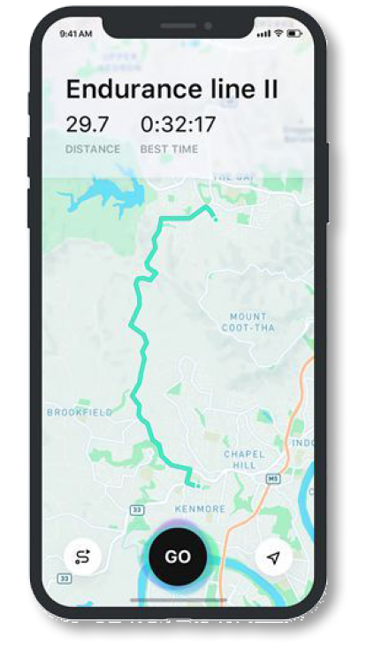

Map Service
Get our free app now for mobile and PC
Map Service is a versatile and valuable tool for anyone who needs to navigate through the world around them. Whether you're traveling to a new city or simply trying to find your way around your own neighborhood, a map app can help you get where you need to go.